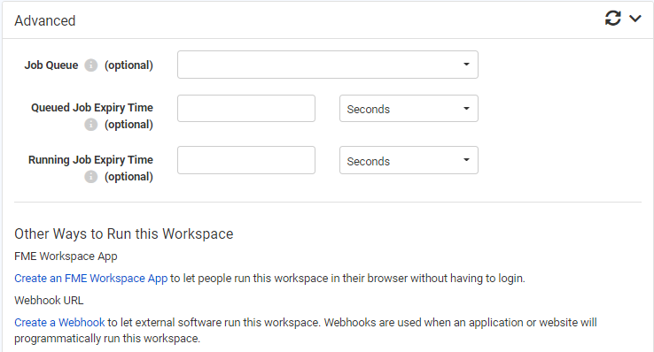
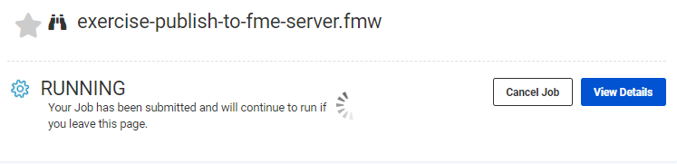
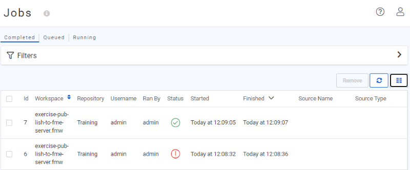
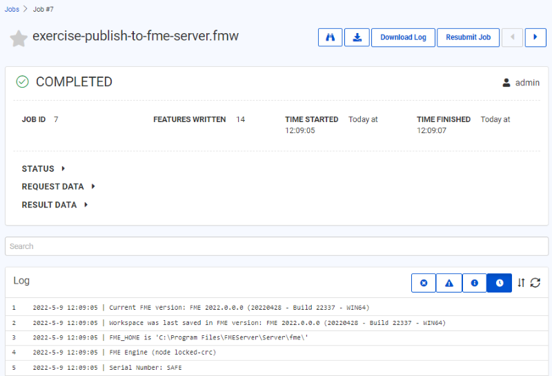

After completing this unit, you’ll be able to:
Let's start our tour of the FME Server web interface at the Run Workspace page. You can access it from the corresponding menu option:
This opens the Run Workspace page, where you can choose a repository, workspace, and service to run a translation:

When you select a workspace that contains Published Parameters, those parameters will be available to be set before running the translation.
The Run Workspace page in FME Server also has an additional section under Advanced. Clicking the arrow to the right of Advanced will expand the advanced parameters menu. These are FME Server specific parameters that fine-tune how the workspace will be run.

Job Queue
Job Queues provide a way to send FME Server jobs to specific Engines or to control the priority of job requests. This parameter allows you to select a predefined Queue to which this job should be sent when it is run. Job Queues can be created by an FME Server Administrator from the Engines & Licensing page.
Queued Job Expiry Time
This sets the maximum amount of time a job can wait in the Queued state before being run. If a job waits longer than this amount of time in the Queue, it will not be run. This option is useful for time-sensitive jobs that you do not want to run after the specified time is exceeded.
Running Job Expiry Time
This sets the maximum amount of time a job can stay in the running state. When this time is exceeded, the job will be canceled automatically.
Other Ways to Run this Workspace
Additionally, in the Advanced section, you can create an FME Server App or create a webhook to run your workspace.
When you are satisfied with the parameters, click the green Run button at the bottom of the page to run the translation. A progress dialog will appear indicating whether your workspace is Running or Queued. From this dialog you can cancel the job or view the details:

Once the workspace (job) has finished running, a completion message will appear, letting you know whether the translation was successful or if it failed. Depending on the Service you ran the workspace with, you will also see other details such as a download link:

Information about all jobs that are running or have run on FME Server will be stored so you can easily view activity on the Server. To access this, choose the menu option for Jobs and select Completed, Queued, or Running jobs to view:

This opens the Jobs page, where you can see the status of jobs, whether Completed, Queued, or Running:

This allows you to check that the translation you just ran finished successfully.
The Filters menu at the top allows you to filter by User, Status, Engine, Repository, Workspace, Source Type, and Source Name. This is especially useful when the job history table runs to thousands of jobs. Filtering helps to find information about a specific job or, for example, to quickly find all jobs that resulted in a failure message.
Clicking on a completed job opens up a page showing information about that job; such as User, Status, Engine, Repository, Workspace, Source Type, and Source Name. You can also view, filter, and search the job log.
A series of buttons allow you to download the FME log from the translation, resubmit the job with a single click, view the workspace, and download the workspace:

This allows you to confirm that the workspace functioned correctly, with the same level of detail as you could find within FME Desktop.
Queued and Running jobs can be listed so that you can see what jobs the Server is currently handling. You can filter the jobs by a particular username.
One particularly useful feature is that these pages can be used to cancel jobs if they are no longer required.